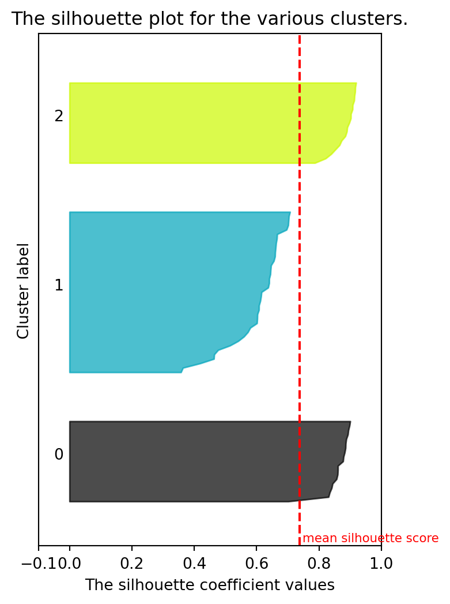
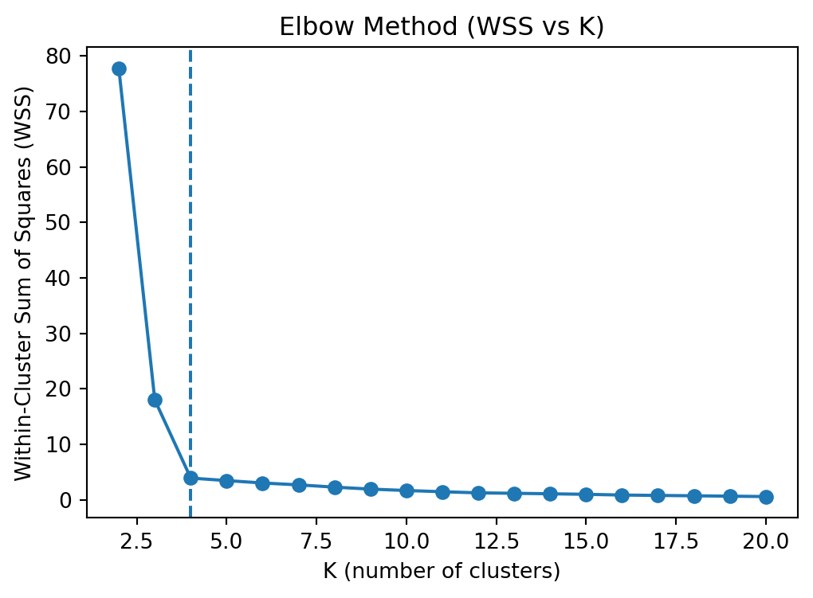
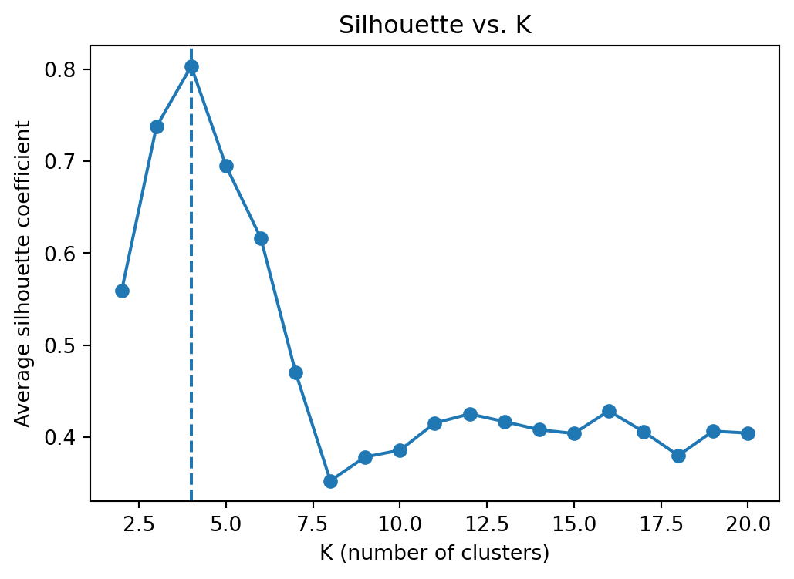

Clustering is an unsupervised learning technique that partitions unlabeled data into groups, or clusters, such that objects within the same cluster are more similar to each other than to those in other clusters.
However, a well-known caveat is that clustering algorithms will always form clusters—even when no meaningful structure exists in the data. Therefore, two important steps are essential:
Assess clustering tendency: Determine whether the data contain any inherent cluster structure before applying clustering.
Validate clustering quality: Evaluate how well the resulting clusters represent the underlying structure.
NoteCluster Validation vs. Clustering Validation
Although often used interchangeably, these two terms have slightly different emphases:
Cluster validation refers to the theoretical framework or set of methods used to assess the quality of clusters. It encompasses the development and categorization of evaluation criteria—such as internal, external, and relative indices—that guide how clustering results are judged.
Clustering validation, in contrast, refers to the practical process of applying those methods to evaluate a specific clustering result. It focuses on how well the chosen algorithm performed on a given dataset.
In short: - Cluster validation → the concept or methodology (the “what”).
- Clustering validation → the process or application (the “how”).
This section introduces fundamental cluster validation concepts and demonstrates both internal and external validation measures. It also illustrates the elbow method for determining the optimal number of clusters.
21.1 Data Preparation
To demonstrate the validation process, we begin with a synthetic two-dimensional dataset generated using make_blobs() from scikit-learn. This dataset provides clearly separated groups, allowing easy visualization of clustering outcomes.
import numpy as npimport pandas as pdimport matplotlib.pyplot as pltfrom sklearn.datasets import make_blobs# Generate a 2D dataset with 4 true centers (for demonstration)X, _ = make_blobs( n_samples=75, centers=4, cluster_std=1.0, random_state=42)# Store in a DataFrame for conveniencedf = pd.DataFrame(X, columns=['X1', 'X2'])# Display the first few rowsprint(df.head())
Scaling the features ensures that each variable contributes equally to distance-based computations. Many clustering algorithms (e.g., K-means) rely on distances, so standardization prevents attributes with larger magnitudes from dominating.
from sklearn.preprocessing import StandardScaler# Standardize the featuresX = df[['X1', 'X2']].to_numpy(dtype=float)scaler = StandardScaler()X_scaled = scaler.fit_transform(X)
A quick scatter plot provides an initial look at the overall distribution and potential cluster patterns in the data.
A Euclidean distance matrix is also computed, which will be useful later for validation methods involving pairwise distances (such as the silhouette coefficient).
from scipy.spatial.distance import pdist, squareform# Condensed pairwise distances and full symmetric distance matrixdist_condensed = pdist(X_scaled, metric='euclidean')dist = squareform(dist_condensed)
21.1.1 K-Means
The K-means algorithm partitions the dataset into K clusters by minimizing the sum of squared distances between each observation and the centroid of its assigned cluster. The method iteratively updates centroids and reassigns observations until convergence (minimal total within-cluster variance).
Below, we apply K-means with \(K=3\) to the standardized data”
import osos.environ['OMP_NUM_THREADS'] ='1'import warningswarnings.filterwarnings("ignore")from sklearn.cluster import KMeans# Initialize and fit K-means with K=3K =3km = KMeans(n_clusters=K, n_init=10, random_state=2024)km.fit(X_scaled)# Retrieve cluster labels and centroidslabels = km.labels_centers = km.cluster_centers_
We can append the resulting cluster assignments to the dataset for inspection.
# Attach cluster labels to the scaled datadf_km = pd.DataFrame(X_scaled, columns=['X1_scaled', 'X2_scaled'])df_km['cluster'] = labelsdf_km.head()
X1_scaled
X2_scaled
cluster
0
-0.972467
0.621457
1
1
1.759130
0.022954
0
2
-0.928490
0.784840
1
3
-0.033813
1.070701
1
4
-0.916017
1.090733
1
The result can be visualized with a scatter plot — each color represents one cluster, and centroids are marked by black “X” symbols:
Internal validation measures evaluate the quality of clustering without using any external labels. They typically quantify two key aspects:
Cohesion (Compactness): How close the data points are to the centroid of their assigned cluster.
Separation (Distinctness): How far apart clusters are from each other or from the global mean.
Together, these two aspects provide insight into whether the clusters are both internally consistent and externally distinct.
21.2.1 Sum of Squares
The sum of squares (SS) concept is fundamental in many data mining and statistical techniques, including K-means. In the context of clustering validation, it can be decomposed into:
Within-cluster sum of squares (WSS) – a measure of cohesion, representing how tightly clustered the points are within each cluster.
Between-cluster sum of squares (BSS) – a measure of separation, indicating how far the cluster centroids are from the global mean.
These measures satisfy the identity:
\[
TSS = WSS + BSS.
\] {#sum-of-squares}
where TSS is the total sum of squares, computed around the global mean of all observations.
For K-means models in scikit-learn, the attribute inertia_ directly provides the WSS value.
# Compute Total (TSS), Within (WSS), and Between (BSS) Sum of Squaresglobal_mean = X_scaled.mean(axis=0, keepdims=True)TSS =float(((X_scaled - global_mean)**2).sum()) # Total SS: deviation from global meanWSS =float(km.inertia_) # Within-Cluster SS: scikit-learn KMeans objectiveBSS = TSS - WSS # Between-Cluster SS: by decomposition# Display resultspd.Series({'WSS (Within-SS)': WSS, 'BSS (Between-SS)': BSS, 'TSS (Total-SS)': TSS})
High WSS: Clusters are large and dispersed → poor cohesion.
High BSS: Clusters are well-separated from each other → good separation.
Ideally, a good clustering solution minimizes WSS and maximizes BSS simultaneously.
In practice, WSS tends to decrease monotonically as the number of clusters \(K\) increases. Therefore, the elbow method—examining the rate of WSS reduction across \(K\), which is used to find a balance between model simplicity and clustering performance (see the later section below).
21.2.2 Silhouette Coefficient
The Silhouette Coefficient (also known as the silhouette width or silhouette index) measures how well each data point fits within its assigned cluster compared to other clusters. It combines cohesion (how close a point is to its own cluster) and separation (how far it is from other clusters).
The coefficient $ s(i) $ for an observation $ i $ is defined as:
\[
s(i) = \frac{b(i) - a(i)}{\max(a(i), b(i))}
\]
where:
\(a(i)\): average distance of \(i\) to all other points in the same cluster (intra-cluster distance).
\(b(i)\): minimum average distance of \(i\) to all points in the next closest cluster (nearest-cluster distance).
The silhouette value of a point \(i\) lies in \([-1, 1]\):
Close to -1: poorly clustered; likely assigned to the wrong cluster.
Around 0: lies between two clusters.
Close to 1: well-clustered and cohesive.
We can compute both per-point silhouettes and the overall average silhouette score using scikit-learn.
from sklearn.metrics import silhouette_samples, silhouette_score# silhouette coefficient for each data pointsil_samples = silhouette_samples(X_scaled, labels, metric="euclidean")df_sil = pd.DataFrame({"cluster": labels,"silhouette": sil_samples})print(df_sil.head(), '\n')# mean silhouette coefficient for all data pointssil_avg = silhouette_score(X_scaled, labels, metric="euclidean")print('Mean Silhouette:', sil_avg.round(6))
Silhouette coefficients by cluster (size, mean, variability, and quantiles) can be summarized to provide a concise diagnostic view of clustering quality:
With very large datasets, the silhouette bar plot can become dense and hard to read. If that happens, consider plotting a random subsample or summarizing with box/violin plots per cluster.
21.2.2.1 Silhouette Plot
The silhouette plot provides a visual representation of how well-separated clusters are:
Each horizontal band represents one cluster (of data points), with bar lengths showing how well individual points fit within their assigned cluster.
Wider bars (toward 1) indicate well-clustered samples with strong cohesion.
Narrow or negative bars (near 0 or below) suggest points lying between clusters or possibly misclassified.
The dashed vertical line shows the overall average silhouette score — Clusters mostly extending beyond this line reflect better separation and consistency.
import matplotlib.cm as cmclusters = np.unique(labels)n_clusters = clusters.shape[0]# Create a subplot with 1 row and 2 columnsfig, ax = plt.subplots(1, 1, figsize=(4,6))# the silhouette plotax.set_xlim([-0.1, 1]) # The silhouette coefficient can range from -1, 1 but in this example all lie within [-0.1, 1]# The (n_clusters+1)*10 is for inserting blank space between silhouette plots of individual clusters, to demarcate them clearly.ax.set_ylim([0, len(X) + (n_clusters +1) *10])y_lower =10for i inrange(n_clusters):# Aggregate the silhouette scores for samples belonging to cluster i, and sort them ith_cluster_silhouette_values = df_sil[df_sil['cluster'] ==i]['silhouette'].sort_values() size_cluster_i = ith_cluster_silhouette_values.shape[0] y_upper = y_lower + size_cluster_i color = cm.nipy_spectral(float(i) / n_clusters) ax.fill_betweenx( np.arange(y_lower, y_upper),0, ith_cluster_silhouette_values, facecolor=color, edgecolor=color, alpha=0.7, )# Label the silhouette plots with their cluster numbers at the middle ax.text(-0.05, y_lower +0.5* size_cluster_i, str(i))# Compute the new y_lower for next plot y_lower = y_upper +10# 10 for the 0 samplesax.set_title("The silhouette plot for the various clusters.")ax.set_xlabel("The silhouette coefficient values")ax.set_ylabel("Cluster label")ax.set_yticks([]) # Clear the yaxis labels / ticksax.set_xticks([-0.1, 0, 0.2, 0.4, 0.6, 0.8, 1])# The vertical line for average silhouette score of all the valuesax.axvline(x=sil_avg, color="red", linestyle="--")ax.text(sil_avg+0.01, 1, 'mean silhouette score', color='red', size=8)plt.show()

For further analysis of the original example, see the documentation of scikit-learn.
Tip
With very large datasets, the silhouette bar plot can be too dense and difficult to interpret. In such cases, you may consider visualizing a random subsample or summarizing the distributions with box or violin plots for clarity.
21.2.3 More Distance-Based Clustering Validation
Beyond WSS and Silhouette, there are many widely-used internal indices:
Calinski–Harabasz (CH) — ratio of between-cluster dispersion to within-cluster dispersion. Higher is better (more separated, tighter clusters).
Davies–Bouldin (DB) — average similarity between each cluster and its most similar one. Lower is better (less overlap).
from sklearn.metrics import calinski_harabasz_score, davies_bouldin_scoreprint("calinski_harabasz:\t", calinski_harabasz_score(X_scaled, labels).round(6))print("davies_bouldin:\t\t", davies_bouldin_score(X_scaled, labels).round(6))
The Elbow Method a visual technique used to decide how many clusters to use in a dataset. It works by plotting a measure of clustering performance (e.g., the within-cluster variation) against the number of clusters. As the number of clusters increases, the variation decreases, but only up to a point. The spot where the rate of improvement sharply slows down (forming an “elbow” in the curve) suggests a reasonable number of clusters that balances simplicity and accuracy.
21.3.1.1 Within-Cluster Sum of Squares (WSS)
We scan \(K=2\) to \(20\) and record WSS (i.e., KMeans.inertia_) for each \(K\).
In scikit-learn, n_init=10 runs K-means with 10 random initializations and keeps the best result.
import numpy as np, pandas as pdimport matplotlib.pyplot as pltfrom sklearn.cluster import KMeansKs = np.arange(2, 21)rng =2024WSS_Ks = []for k in Ks: km = KMeans(n_clusters=k, n_init=10, random_state=rng).fit(X_scaled) WSS_Ks.append(float(km.inertia_))wss_df = pd.DataFrame({"K": Ks, "WSS": WSS_Ks})wss_df
K
WSS
0
2
77.722417
1
3
18.007182
2
4
3.920671
3
5
3.468424
4
6
3.033197
5
7
2.695567
6
8
2.286946
7
9
1.934712
8
10
1.679072
9
11
1.458952
10
12
1.258120
11
13
1.177127
12
14
1.089850
13
15
0.993315
14
16
0.862433
15
17
0.792744
16
18
0.728170
17
19
0.657286
18
20
0.591418
Visualize the WSS curve and (optionally) mark a manually chosen elbow (here at \(K=4\)):
fig, ax = plt.subplots(figsize=(6, 4))ax.plot(wss_df["K"], wss_df["WSS"], marker="o")ax.axvline(x=4, linestyle="--") # manual elbow marker (optional)ax.set_xlabel("K (number of clusters)")ax.set_ylabel("Within-Cluster Sum of Squares (WSS)")ax.set_title("Elbow Method (WSS vs K)")plt.show()

Elbow plot of WSS vs K (dashed line at K=4).
21.3.1.2 Elbow Method: Silhouette coefficient
The procedure for the elbow method with Silhouette coefficient is very similar but just need to calculate the coefficients for different clusterings.
We compute the average silhouette for each \(K\) and visualize it similarly (Silhouette is defined for \(K≥2\)). The following plot shows that 4 clusters resulted in the best coefficients.
from sklearn.metrics import silhouette_scoreSI_Ks = []for k in Ks: km = KMeans(n_clusters=k, n_init=10, random_state=rng).fit(X_scaled) labels_k = km.labels_ SI_Ks.append(float(silhouette_score(X_scaled, labels_k, metric="euclidean")))sil_df = pd.DataFrame({"K": Ks, "silhouette": SI_Ks})sil_df
K
silhouette
0
2
0.558886
1
3
0.737838
2
4
0.803591
3
5
0.695204
4
6
0.616531
5
7
0.470388
6
8
0.352211
7
9
0.378149
8
10
0.385522
9
11
0.415032
10
12
0.425038
11
13
0.416679
12
14
0.407792
13
15
0.403706
14
16
0.428301
15
17
0.405704
16
18
0.379724
17
19
0.406265
18
20
0.404155
fig, ax = plt.subplots(figsize=(6, 4))ax.plot(sil_df["K"], sil_df["silhouette"], marker="o")ax.axvline(x=4, linestyle="--")ax.set_xlabel("K (number of clusters)")ax.set_ylabel("Average silhouette coefficient")ax.set_title("Silhouette vs. K")plt.show()

Average silhouette vs. K (vertical line at K=4).
Warning
The “best” \(K\) depends on data and judgment, so the elbow can be ambiguous. Automated knee detectors (e.g., kneed) are optional and not sure to be optimal universally.
21.4 External Clustering Validation Measures
External validation metrics compare clustering results with an external reference or ground truth labels to evaluate how accurately the algorithm recovered the known class structure.
Below we demonstrate three common measures—Purity, Entropy, and Recall—using a cluster–class contingency table. Each row represents a cluster, and each column represents a true class.
Purity measures how much each cluster contains data points from a single true class. A higher purity value (closer to 1) indicates more homogeneous clusters and a stronger alignment with ground truth labels.
For each cluster \(i\), its per-cluster purity is the fraction of correctly assigned samples within that cluster (max cell in the row divided by the row sum):
# Per-cluster purityrow_sums = CCC_mat.sum(axis=1) # total items in each clustermax_each_row = CCC_mat.max(axis=1) # most frequent class per clusterpurity_each = (max_each_row / row_sums).rename("purity_each")purity_each
Per-cluster purity — measures how dominated each cluster is by a single true class.
Overall purity — values near 1 indicate strong alignment between clusters and true labels.
WarningLimitation
Purity tends to increase with more clusters, reaching 1 when every data point forms its own cluster. Therefore, it should be interpreted together with other indices (e.g., entropy or recall).
21.4.2 Entropy
Entropy measures the degree of class mixture within each cluster. A lower entropy value indicates that the cluster contains mostly one class (high purity), while higher entropy indicates greater heterogeneity.
Per-cluster entropy: quantifies how mixed the true classes are within each cluster.
Overall entropy: weighted average that summarizes the global class uncertainty across clusters.
Ideal behavior:
Lower entropy — clusters are purer (dominated by one class).
Higher entropy — clusters are mixed and less well-separated.
Note
Entropy complements purity, in that both describe cluster homogeneity but from opposite perspectives (purity favors dominance, entropy penalizes mixing).
21.4.3 Recall
Recall in clustering validation measures how completely each true class is captured by the cluster to which it is assigned.
After assigning each cluster to its dominant true class, recall for cluster (i) is computed as:
\[
\text{Recall}_i = \frac{\text{True Positives in assigned class}}{\text{Total items of that true class}}.
\]
The overall recall is the weighted average across clusters:
# Assign each cluster to the true class with the largest count in that clusterassigned_idx = CCC_mat.values.argmax(axis=1) # integer column indicesassigned_labels = CCC_mat.columns[assigned_idx] # class names per clusterassigned_map = pd.Series(assigned_labels, index=CCC_mat.index, name="assigned_class")# Reorder columns to align with assignments (each cluster matched to its assigned class)CCC_mat_reordered = CCC_mat.reindex(columns=assigned_labels)# Numerator: true positives (diagonal of the reordered matrix)recall_numer = np.diag(CCC_mat_reordered.values)# Denominator: total number of items in each true class (per assigned label)class_totals = CCC_mat.sum(axis=0)recall_deno = class_totals.loc[assigned_labels].to_numpy()# Recall per clusterrecall_each = pd.Series(recall_numer / recall_deno, index=CCC_mat.index, name="recall_each")# Weighted overall recallrecall_overall = (weights * recall_each).sum()print(pd.concat([assigned_map, recall_each, weights], axis=1), '\n')print("recall_overall:", recall_overall.round(6))
Per-cluster recall: measures how well the assigned cluster recovers all members of its corresponding true class.
Overall recall: weighted average showing how completely the entire clustering captures the true structure of the data.
Ideal behavior:
Higher recall values (close to 1) indicate that clusters cover most of the data points belonging to their matched true classes.
Low recall suggests that some true classes are fragmented across multiple clusters.
Note
Recall complements purity—purity measures how homogeneous clusters are, while recall measures how well true classes are preserved within the clustering.
Related Reading/Reference
Chapter 7.5 in Introduction to Data Mining, 2nd ed. (Tan et al., 2019)
Manning, C. D., Raghavan, P., & Schütze, H. (2008). Introduction to Information Retrieval. Cambridge University Press.